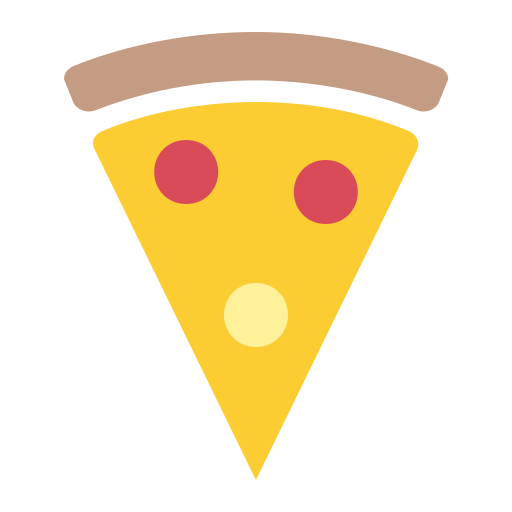
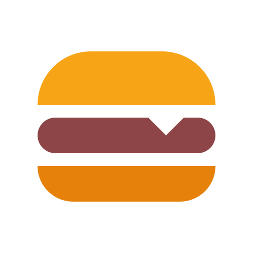
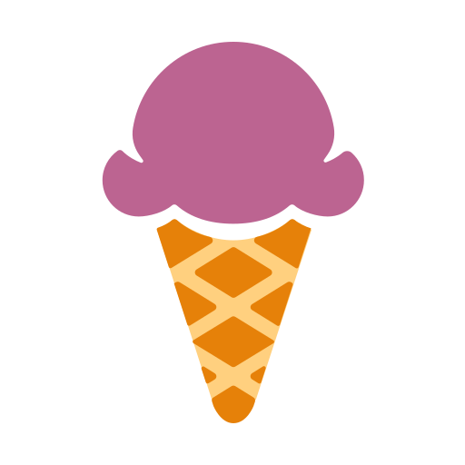

<div class="order-toolbar-wrapper">
    <ion-row
            *ngIf="orderedItemsCount>0"
            align-items-center
            class="order-toolbar {{desktop?'clickable':''}}">
        <ion-col size="8">
            <ion-row>
                <div class="icon-holder" *ngIf="pizzaCount>0">
                    
                    <ion-badge [@foodIcon]>{{pizzaCount}}</ion-badge>
                </div>
                <div class="icon-holder" *ngIf="streetFoodCount>0">
                    
                    <ion-badge [@foodIcon]>{{streetFoodCount}}</ion-badge>
                </div>
                <div class="icon-holder" *ngIf="dessertCount>0">
                    
                    <ion-badge [@foodIcon]>{{dessertCount}}</ion-badge>
                </div>
                <div class="icon-holder" *ngIf="drinksCount>0">
                    
                    <ion-badge [@foodIcon]>{{drinksCount}}</ion-badge>
                </div>
            </ion-row>
        </ion-col>
        <ion-col size="4">
            <a>
                <ion-row align-items-center justify-content-end>
                    Check out
                    <ion-icon name="ios-arrow-forward"></ion-icon>
                </ion-row>
            </a>
        </ion-col>
    </ion-row>
</div>
